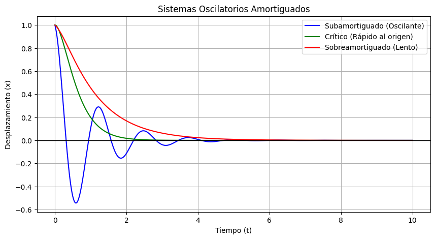

En esta sesión pasaremos de las ecuaciones de primer orden a las Ecuaciones Diferenciales Lineales Homogéneas de Segundo Orden con Coeficientes Constantes. Estas ecuaciones constituyen la herramienta matemática fundamental para modelar y comprender el comportamiento de sistemas dinámicos, estructuras sujetas a vibraciones y circuitos eléctricos.
Donde \(a, b, c\) son constantes reales con \(a \neq 0\).
Para resolverlas proponemos una solución exponencial de la forma \( y = e^{rx} \). Al derivar y sustituir en la ecuación diferencial, obtenemos la denominada Ecuación Característica:
\[ a r^2 + b r + c = 0 \]Dependiendo de la naturaleza de las raíces (\(r_1, r_2\)) de esta ecuación cuadrática, se presentan tres casos posibles:
Resuelve el problema de valor inicial dado por la ecuación diferencial \( 2y'' - 5y' - 3y = 0 \), sujeta a las condiciones iniciales \( y(0) = 1 \) y \( y'(0) = 4 \).
Solución:
Para resolver este problema de valor inicial, comenzamos asociando a la ecuación diferencial lineal su correspondiente ecuación característica cuadrática, la cual se obtiene al reemplazar la función y sus derivadas por potencias de la variable polinomial \( r \), resultando en \( 2r^2 - 5r - 3 = 0 \).
Podemos encontrar las raíces de este polinomio mediante factorización directa expresándolo como el producto de dos binomios \( (2r + 1)(r - 3) = 0 \), o bien aplicando la fórmula general para ecuaciones de segundo orden. De este modo obtenemos dos raíces reales distintas: \( r_1 = -\frac{1}{2} \) y \( r_2 = 3 \). Al ser raíces reales y diferentes, la solución general de la ecuación diferencial se conforma mediante una combinación lineal de ambas funciones exponenciales independientes:
\[ y(x) = C_1 e^{-x/2} + C_2 e^{3x} \]Con el fin de determinar las constantes arbitrarias \( C_1 \) y \( C_2 \), requerimos derivar la solución general respecto a \( x \), lo que nos da como resultado la función velocidad del sistema: $$ y'(x) = -\frac{1}{2} C_1 e^{-x/2} + 3 C_2 e^{3x} $$.
Evaluamos ahora las condiciones iniciales dadas en \( x = 0 \). Aplicando la primera condición de posición \( y(0) = 1 \), sustituimos \( x = 0 \) en la solución general obteniendo la ecuación lineal $$ C_1 + C_2 = 1.$$ Posteriormente, aplicando la condición de velocidad inicial \( y'(0) = 4 \), obtenemos la segunda ecuación lineal $$ -\frac{1}{2} C_1 + 3 C_2 = 4 . $$
Resolvemos el sistema simultáneo de dos ecuaciones con dos incógnitas. Multiplicando la primera ecuación por \( \frac{1}{2} \) y sumándola con la segunda, eliminamos la variable \( C_1 \), lo que nos conduce a $$ \frac{7}{2} C_2 = \frac{9}{2} \implie C_2 = \frac{9}{7} .$$ Sustituyendo este valor en la primera relación se halla que $$ C_1 = 1 - \frac{9}{7} = -\frac{2}{7} .$$ Sustituyendo finalmente estos valores numéricos en la solución general, alcanzamos la solución particular única:
\[ y(x) = -\frac{2}{7} e^{-x/2} + \frac{9}{7} e^{3x} \]Resuelve el problema de valor inicial \( 4y'' + 12y' + 9y = 0 \), con las condiciones iniciales \( y(0) = 2 \) y \( y'(0) = -1 \).
Solución:
Iniciamos el proceso transformando la ecuación diferencial de segundo orden en su ecuación característica asociada, la cual toma la forma algebraica $$4r^2 + 12r + 9 = 0 $$
Al analizar la estructura del trinomio, observamos que corresponde exactamente a un trinomio cuadrado perfecto que se puede factorizar de manera directa como \( (2r + 3)^2 = 0 \). De aquí se deriva una única raíz real repetida de multiplicidad dos, dada por \( r = -\frac{3}{2} \). Dado que una sola exponencial no genera el espacio completo de soluciones para una ecuación de segundo orden, multiplicamos la segunda solución por la variable independiente \( x \) para garantizar la independencia lineal entre los términos (asegurando un Wronskiano no nulo). Por consiguiente, la solución general queda establecida como:
\[ y(x) = C_1 e^{-3x/2} + C_2 x e^{-3x/2} \]Para hacer uso de la condición inicial sobre la derivada, calculamos la primera derivada de \( y(x) \) aplicando estrictamente la regla del producto en el término que contiene a la variable \( x \):
\[ y'(x) = -\frac{3}{2} C_1 e^{-3x/2} + C_2 e^{-3x/2} - \frac{3}{2} C_2 x e^{-3x/2} = \left( -\frac{3}{2} C_1 + C_2 - \frac{3}{2} C_2 x \right) e^{-3x/2} \]Evaluamos a continuación las condiciones iniciales en el punto \( x = 0 \). De la primera condición \( y(0) = 2 \), la expresión se reduce de forma inmediata a \( C_1 = 2 \). Luego, sustituyendo la segunda condición inicial \( y'(0) = -1 \), obtenemos la relación lineal $$-\frac{3}{2} C_1 + C_2 = -1 $$ Reemplazando el valor ya conocido de \( C_1 = 2 \), nos queda la ecuación $$ -\frac{3}{2}(2) + C_2 = -1 \implies -3 + C_2 = -1.$$ de donde \( C_2 = 2 \). Al ingresar estas constantes en la solución general, concluimos:
\[ y(x) = 2 e^{-3x/2} + 2 x e^{-3x/2} \]Encuentra la solución general de la ecuación diferencial homogénea $$ y'' - 4y' + 13y = 0 $$
Solución:
Comenzamos planteando la ecuación característica correspondiente a la ecuación diferencial dada, que toma la forma polinomial$$ r^2 - 4r + 13 = 0 $$
Para determinar los valores de \( r \), recurrimos a la fórmula cuadrática considerando los coeficientes \( a = 1 \), \( b = -4 \) y \( c = 13 \):
\[ r = \frac{-(-4) \pm \sqrt{(-4)^2 - 4(1)(13)}}{2(1)} = \frac{4 \pm \sqrt{16 - 52}}{2} = \frac{4 \pm \sqrt{-36}}{2} \]Dado que el discriminante es estrictamente negativo (\( b^2 - 4ac = -36 < 0 \)), hacemos uso de la unidad imaginaria \( i = \sqrt{-1} \), lo que transforma la raíz en \( \sqrt{-36} = 6i \). Así, obtenemos un par de raíces complejas conjugadas de la forma $$ r = \frac{4 \pm 6i}{2} = 2 \pm 3i $$
Identificamos con claridad la parte real de la raíz como \( \alpha = 2 \) y la parte imaginaria como \( \beta = 3 \). Utilizando la identidad de Euler para convertir la combinación exponencial compleja en funciones armónicas reales,, se obtiene la solución general real:
\[ y(x) = e^{2x} (C_1 \cos(3x) + C_2 \sin(3x)) \]A diferencia de los problemas de valor inicial donde las condiciones se dan en un mismo punto, en un Problema de Valor en la Frontera las condiciones se establecen en puntos distintos del dominio. Resuelve la ecuación \( y'' + 4y = 0 \), sujeta a las condiciones de frontera \( y(0) = 0 \) y \( y\left(\frac{\pi}{4}\right) = 2 \).
Solución:
El primer paso consiste en formular la ecuación característica reemplazando las derivadas por potencias de la variable auxiliar, obteniendo \( r^2 + 4 = 0 \). Al despejar directamente las raíces hallamos que \( r^2 = -4 \implies r = \pm 2i \). Se trata de un par de raíces imaginarias puras donde la parte real es nula (\( \alpha = 0 \)) y la parte imaginaria es \( \beta = 2 \).
Debido a que la parte real es cero, el término exponencial modulador satisface \( e^{0x} = 1 \), reduciendo la solución general a una combinación lineal puramente oscilatoria descrita por funciones trigonométricas senoidales:
\[ y(x) = C_1 \cos(2x) + C_2 \sin(2x) \]Evaluamos ahora la primera condición de frontera en la posición inicial \( x = 0 \):
\[ y(0) = C_1 \cos(0) + C_2 \sin(0) = C_1(1) + C_2(0) = C_1 = 0 \]Al anularse el coeficiente \( C_1 \), la solución general se simplifica considerablemente al modelo \( y(x) = C_2 \sin(2x) \).
Posteriormente, aplicamos la segunda condición de frontera en el extremo \( x = \frac{\pi}{4} \):
\[ y\left(\frac{\pi}{4}\right) = C_2 \sin\left(2 \cdot \frac{\pi}{4}\right) = C_2 \sin\left(\frac{\pi}{2}\right) = C_2(1) = 2 \implies C_2 = 2 \]Sustituyendo el valor encontrado para la constante \( C_2 \), determinamos la solución particular única que satisface ambas condiciones de frontera fijadas:
\[ y(x) = 2 \sin(2x) \]Dada la ecuación diferencial \( y'' + 6y' + 25y = 0 \), encuentra la solución particular tal que \( y(0) = 3 \) y \( y'(0) = -9 \). Posteriormente, determina el comportamiento asintótico evaluando si \( \lim_{x \to \infty} y(x) = 0 \).
Solución:
Iniciamos construyendo la ecuación característica asociada a la ecuación diferencial dada, obteniendo el polinomio cuadrático $$ r^2 + 6r + 25 = 0 . $$ Resolvemos mediante la fórmula general para ecuaciones cuadráticas:
\[ r = \frac{-6 \pm \sqrt{36 - 100}}{2} = \frac{-6 \pm \sqrt{-64}}{2} = \frac{-6 \pm 8i}{2} = -3 \pm 4i \]Las raíces corresponden a un par de números complejos conjugados cuya parte real es \( \alpha = -3 \) y cuya parte imaginaria es \( \beta = 4 \). Por lo tanto, la solución general construida con funciones reales es:
\[ y(x) = e^{-3x}(C_1 \cos(4x) + C_2 \sin(4x)) \]Para aplicar las condiciones iniciales, evaluamos en primer lugar la función de posición en \( x = 0 \), teniendo que $$y(0) = e^{0}(C_1 \cos(0) + C_2 \sin(0)) = C_1 = 3 $$
Para incorporar la segunda condición sobre la velocidad inicial, hallamos la derivada de la solución general utilizando la regla del producto para derivadas:
\[ y'(x) = -3e^{-3x}(C_1 \cos(4x) + C_2 \sin(4x)) + e^{-3x}(-4C_1 \sin(4x) + 4C_2 \cos(4x)) \]Evaluamos dicha derivada en \( x = 0 \) e introducimos el valor conocido de \( C_1 = 3 \):
\[ y'(0) = -3(1)(3(1) + 0) + 1(-4(3)(0) + 4C_2(1)) = -9 + 4C_2 = -9 \implies 4C_2 = 0 \implies C_2 = 0 \]Con las constantes definidas (\( C_1 = 3, C_2 = 0 \)), la solución particular del sistema toma la forma matemática:
\[ y(x) = 3e^{-3x}\cos(4x) \]Para analizar el comportamiento asintótico cuando el tiempo o la variable independiente tiende a infinito (\( x \to \infty \)), calculamos el límite de la función particular. Observamos que la función armónica \( \cos(4x) \) se encuentra acotada entre los valores \( -1 \) y \( 1 \) para cualquier valor de \( x \). Por su parte, la envolvente exponencial \( 3e^{-3x} \) tiende a cero aceleradamente debido al exponente negativo. Aplicando el Teorema del Sándwich o del Encaje se cumple que:
\[ \lim_{x \to \infty} \left( -3e^{-3x} \right) \le \lim_{x \to \infty} 3e^{-3x}\cos(4x) \le \lim_{x \to \infty} \left( 3e^{-3x} \right) \implies 0 \le \lim_{x \to \infty} y(x) \le 0 \]Por consiguiente, confirmamos que efectivamente el límite cuando \( x \to \infty \) es igual a 0. Físicamente esto representa una oscilación subamortiguada en la cual la energía del sistema se disipa por completo con el transcurso del tiempo.
Las Ecuaciones Diferenciales Lineales de Segundo Orden describen con precisión el movimiento de masas acopladas a resortes según la Segunda Ley de Newton y la Ley de Hooke.
Si una masa \(m\) se conecta a un resorte con constante de restitución \(k\) en ausencia total de fricción, la ecuación de movimiento resultante es:
\[ m \frac{d^2x}{dt^2} = -kx \implies mx'' + kx = 0 \]Su ecuación característica \( mr^2 + k = 0 \) posee raíces imaginarias puras \( r = \pm i\sqrt{k/m} \). Definimos la frecuencia angular natural como \( \omega_0 = \sqrt{k/m} \). El sistema oscilará perpetuamente sin disipación de energía (movimiento armónico simple).
En aplicaciones reales existe una fuerza resistiva proporcional a la velocidad del sistema definida por un coeficiente de amortiguamiento \(c\). La ecuación diferencial del movimiento se convierte en:
\[ mx'' + cx' + kx = 0 \]Dependiendo del signo del discriminante característico \(c^2 - 4mk\), clasificamos el comportamiento físico en tres regímenes:
En la figura siguiente se muestra el comportamiento en los tres tipos de amortiguamiento.

Para experimentar cómo la masa, la fricción y la rigidez alteran la respuesta de una ecuación de segundo orden, copia y pega el siguiente prompt en tu modelo de IA preferido:
Actúa como un profesor experto en física y ecuaciones diferenciales.
Tengo el sistema mx'' + cx' + kx = 0.
Genera 3 ejemplos numéricos distintos asignando valores específicos a m, c y k
de modo que correspondan a los tres casos (sobreamortiguado, críticamente amortiguado
y subamortiguado). Para cada caso, escribe la ecuación característica, encuentra sus
raíces de forma detallada y muestra la solución general paso a paso.
Responde a continuación todas las preguntas del cuestionario conceptual y operativo. Nota: Es indispensable responder las 5 preguntas de forma completa para poder evaluar la actividad y visualizar la retroalimentación detallada.